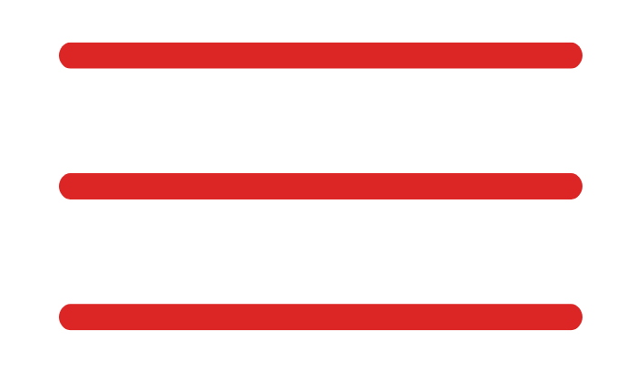

A OnTrack Systems garante um monitoramento inteligente, estável e confiavel, acompanhando o hardware de serviços de transporte público.
A OnTrack Systems nasceu com o propósito de garantir estabilidade e eficiência aos servidores que operam nas garagens do sistema de transporte público. Nossa solução é especializada no monitoramento em tempo real da infraestrutura de hardware, permitindo identificar falhas e instabilidades antes que impactem a bilhetagem eletrônica e a operação dos ônibus.
Com dashboards intuitivos e alertas automáticos, oferecemos visibilidade total do desempenho dos servidores, desde o uso de CPU, disco, memória e Rede até a detecção de comportamentos anômalos. Isso assegura maior confiabilidade e reduz riscos de prejuízos decorrentes de paradas inesperadas.
Nossos Diferenciais
Alertas automáticos sempre que CPU, RAM, Disco e Rede fugirem do parâmetro, evitando falhas inesperadas.
Análises históricas para prever gargalos e orientar upgrades antes que os problemas ocorram.

Redução drástica do risco de paralisações, garantindo continuidade no funcionamento do transporte.
Os servidores instalados nas garagens da SPTrans são componentes críticos para o funcionamento de sistemas como a bilhetagem eletrônica, rastreamento e comunicação operacional da frota. Qualquer instabilidade nesses servidores pode gerar prejuízos operacionais e financeiros, além de afetar diretamente a mobilidade de milhões de pessoas que utilizam o transporte público diariamente. Diante dessa responsabilidade, escolhemos atuar nesse setor estratégico, oferecendo um monitoramento dedicado e proativo da infraestrutura de TI nas garagens, contribuindo para a continuidade e a confiabilidade do serviço prestado pela SPTrans.
Contato